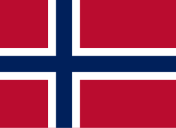
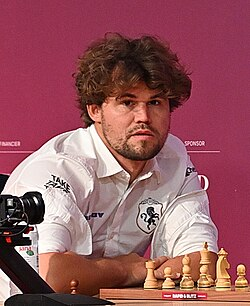
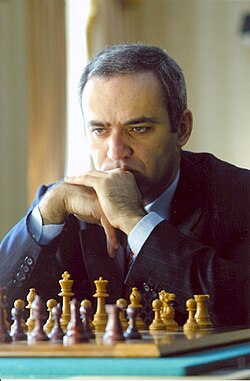
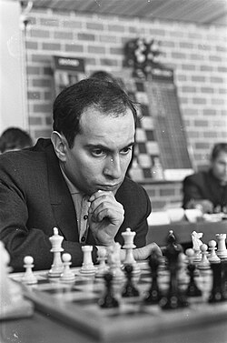
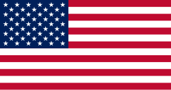
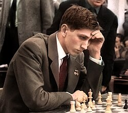
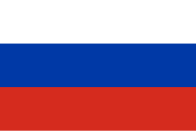
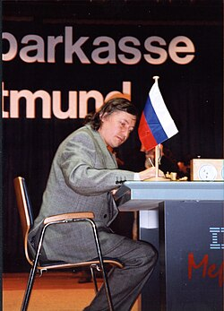

Maiores Enxadristas da História
Magnus Carlsen


Ranking FIDE mais alto: 2882 (2014) - Recorde Mundial
Magnus Carlsen é a personificação do xadrez moderno, combinando uma intuição posicional assustadora com uma frieza psicológica inabalável, fazendo do xadrez uma verdadeira arte. Nascido na Noruega em 1990, ele alcançou o título de Grande Mestre aos 13 anos e, em 2011, assumiu o topo do ranking mundial para nunca mais sair. Carlsen chocou o mundo em 2013 ao se tornar campeão mundial, iniciando uma era de domínio absoluto. Seu estilo de jogo foca em moer os adversários em finais aparentemente empatados, transformando pequenas vantagens em vitórias inevitáveis com uma precisão cirúrgica e implacável.
Em 2014, ele atingiu o ápice absoluto de sua força ao cravar o rating histórico de 2882, quebrando o recorde de Garry Kasparov e estabelecendo o maior Elo da história da humanidade. Carlsen defendeu sua coroa mundial por uma década e, em um movimento surpreendente, abdicou voluntariamente de seu título clássico em 2023 por falta de motivação para o formato tradicional. Mesmo sem o cinturão linear, ele segue isolado como o número 1 do mundo, colecionando títulos mundiais de xadrez Rápido e Blitz. Ao dominar o esporte em todas as suas vertentes, Carlsen consolidou-se como o maior gênio de sua geração.
Garry Kasparov

Ranking FIDE mais alto: 2851 (1999)
Garry Kasparov é amplamente considerado o maior enxadrista de todos os tempos devido à sua genialidade e intensidade implacável. Nascido em 1963 em Baku, ele chocou o mundo ao se tornar, em 1985, o mais jovem campeão mundial da história até então. Sua ascensão foi marcada por uma rivalidade lendária contra Anatoly Karpov, um duelo que extrapolou os tabuleiros e refletiu os embates políticos da antiga União Soviética. Kasparov manteve o topo do xadrez mundial por quinze anos, período no qual também protagonizou os históricos confrontos contra o supercomputador Deep Blue da IBM, um marco definitivo na relação entre a mente humana e a inteligência artificial.
Em 2005, após revolucionar o esporte com o pioneirismo no uso de computadores para análises estratégicas, Kasparov aposentou-se do xadrez profissional para iniciar seu segundo ato. Ele direcionou sua capacidade intelectual para a geopolítica, tornando-se um dos críticos mais ferrenhos do regime de Vladimir Putin e um defensor global dos direitos humanos — ativismo que o levou ao exílio em 2013. Seja sacrificando peças em uma partida ou enfrentando o autoritarismo na vida real, Kasparov consolidou um legado duplo e imensurável, provando que a lógica de um Grande Mestre pode ser uma ferramenta poderosa na defesa da liberdade humana.
Mikhail Tal

Ranking FIDE mais alto: 2799 (1980)
Mikhail Tal, eternizado como o "Mago de Riga", foi o enxadrista mais romântico, imprevisível e eletrizante da história, transformando o tabuleiro em um palco de pura magia e caos. Nascido na Letônia em 1936, ele assombrou o planeta com uma ascensão meteórica, culminando em 1960 quando, aos 23 anos, destronou Mikhail Botvinnik para se tornar o mais jovem campeão mundial até aquela data. Seu estilo era o oposto do pragmatismo científico de sua época: Tal jogava com um instinto de ataque agressivo e poético, disparando sacrifícios de peças tão complexos e intuitivos que os adversários, aterrorizados pela complicação tática, erravam na tentativa de calcular a defesa.Tal dizia que haviam dois tipos de sacrifícios no Xadrez: "Os corretos e os meus". Ele defendia que o xadrez era uma arte e dizia que era preciso "levar o oponente para uma floresta escura onde dois mais dois são cinco".
Embora problemas crônicos de saúde tenham encurtado seu reinado para apenas um ano — perdendo a revanche para Botvinnik em 1961 —, a lenda de Tal continuou a crescer nas décadas seguintes. Já veterano, ele alcançou seu pico oficial de rating FIDE de 2705 em 1980, tornando-se um dos raríssimos jogadores daquela era a romper a barreira dos 2700 pontos, além de ter estabelecido duas das maiores sequências de invencibilidade da história do esporte. Mesmo debilitado fisicamente, sua mente permaneceu genial, coroando-se campeão mundial de Blitz em 1988 ao vencer o próprio Kasparov. Ao priorizar a beleza do ataque sobre a segurança do empate, Tal provou que o xadrez, acima de tudo, pertence aos ousados e aos sonhadores.
Bobby Fischer


Ranking FIDE mais alto: 2785 (1972)
Bobby Fischer foi um meteoro que transformou o xadrez em um fenômeno global de massas, movido por uma obsessão absoluta e uma genialidade quase mística. Nascido nos Estados Unidos em 1943, ele quebrou recordes de precocidade na infância e, praticamente sozinho, enfrentou e desmantelou a poderosa hegemonia da escola soviética, que dominava o esporte há décadas. Seu estilo de jogo era purista, focado na busca incansável pela verdade no tabuleiro, aliando uma agressividade calculada a uma técnica de final impecável. Essa jornada solitária culminou em 1972, no lendário "Match do Século" contra Boris Spassky na Islândia, onde Fischer sagrou-se campeão mundial.
O confronto não foi apenas esportivo, mas um dos episódios mais emblemáticos da Guerra Fria, simbolizando o embate ideológico entre os blocos ocidental e soviético. No ápice da conquista, Fischer atingiu o rating histórico de 2785, uma pontuação assustadora para a sua época devido à colossal distância que abriu de seus rivais. Contudo, após alcançar o topo do mundo, o enxadrista mergulhou em um isolamento profundo e abdicou do título em 1975 ao recusar-se a defendê-lo por discordar das regras da federação. Apesar de seu afastamento precoce e de uma vida posterior marcada por excentricidades e polêmicas, Fischer cravou seu nome na eternidade como o homem que elevou o xadrez ao topo do interesse mundial.
Anatoly Karpov


Ranking FIDE mais alto: 2780 (1994)
Anatoly Karpov é o símbolo máximo da paciência, da precisão cirúrgica e do pragmatismo no xadrez, sendo considerado um dos maiores estrategistas que já existiram. Nascido na União Soviética em 1951, ele subiu metodicamente os degraus do xadrez mundial até se tornar campeão em 1975, herdeiro do trono deixado vago por Bobby Fischer. Longe de ser um campeão por W.O., Karpov provou seu valor ao dominar o circuito de torneios por uma década com uma consistência avassaladora. Seu estilo de jogo, conhecido como "boa constritora", evitava complicações táticas desnecessárias; ele preferia sufocar os adversários milímetro por milímetro, neutralizando qualquer plano de contra-ataque antes mesmo que ele pudesse ser concebido.
O auge de sua carreira foi indissociável de sua rivalidade titânica com Garry Kasparov, para quem perdeu o título em 1985. O embate entre os dois dividiu o mundo: Karpov personificava a disciplina e o prestígio do establishment soviético tradicional. Mesmo após perder a coroa, ele manteve-se na elite absoluta e, em 1994, alcançou seu pico de rating de 2780 após uma performance lendária no Torneio de Linares, considerada uma das exibições mais dominantes da história do esporte. Karpov recuperou o título mundial da FIDE nos anos 90 e acumulou mais de 160 vitórias em torneios de elite ao longo da vida. Ao transformar a contenção e a lógica posicional em arte, ele gravou seu nome de forma definitiva no topo do panteão do xadrez.